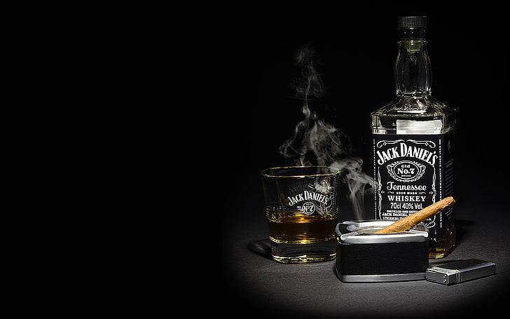
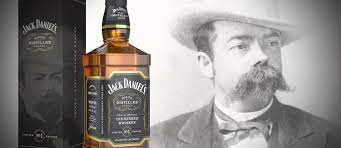

A história do whisky no mundo aconteceu graças a uma ajudinha dos árabes. Ele foi levado às Américas por imigrantes escoceses e irlandeses no século XVIII. O tradicional whisky americano Bourbon surgiu quando imigrantes nos Estados Unidos passaram a usar milho na produção do whisky.
O whisky escocês também alcançou o Japão no século XX, levado pelo químico japonês chamado Masataka Taketsuru. Ele aprendeu o processo de destilação com os escoceses e quando voltou para o Japão, fundou a primeira destilaria de whisky do país.
Como você pode ver até o momento, a história do whisky está relacionada a divergências de origem. E isso torna ainda mais fascinante à busca por respostas. Você provavelmente ficou intrigado com isso. Irlandeses e escoceses? Agora vamos descobrir a origem do nome dessa bebida responsável pelos porres e desgraça de muitos.
Apesar de existirem divergências sobre a produção do primeiro whisky do mundo, podemos afirmar de onde surgiu o nome, sem que haja dúvidas quanto a isso. Todavia, para que possamos compreender isso, é necessário que saibamos como se deu o processo de destilação da bebida.
Podemos afirmar que essa é uma das bebidas mais apreciadas ao redor de todo o mundo ao longo da História. No entanto, ainda que seja alvo de tanto apreço, sua origem é um tanto difícil de afirmar. Há controvérsias sobre o seu surgimento, ainda que um vasto número de menções aponte para os monges irlandeses como sendo os primeiros produtores de whisky. Há também a possibilidade de que os primeiros criadores tenham sido os escoceses.
E aí? Afinal de contas, quem criou a primeira garrafa de whisky?
